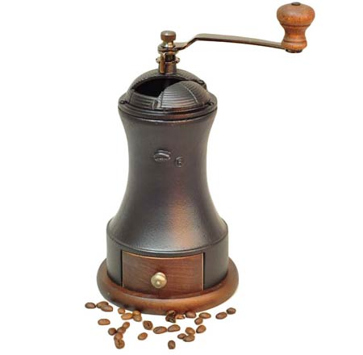

Masina de sfaramat cafea manuala
Masina de tocat cafea manuală este o tehnică mai potrivită pentru iubitorii de cafea care nu vor pierde timpul necesar pentru a pregăti această băutură uimitoare. Principalul avantaj al unui astfel de dispozitiv este că cerealele și cafeaua măcinată nu se încălzesc, păstrând astfel toate beneficiile băuturii.

În ceea ce privește alegerea unei mașini de tocat cafea manuală, aproape toate funcționează pe același sistem. Masina de tocat cafea este formata din doua pietre de moara care se rotesc si macina boabele de cafea. Unul este atașat la partea inferioară, iar al doilea se rotește cu mânerul.